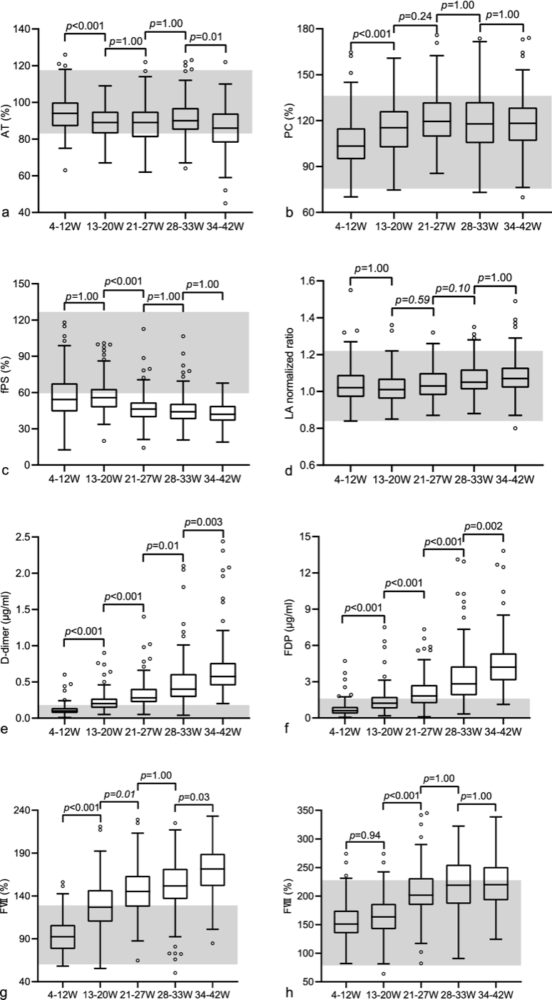

saber por que cada alternativa da A–E erra (proteína S, SAF, D-dímero, USG);
carregar as 5 armadilhas da GO num card só.
A resolução da UEL: o pico é no puerpério, primeiras 6 semanas
Voltando à questão plantada na abertura do eixo: o pico do risco de TEV pós-parto acontece no PUERPÉRIO — as primeiras 6 semanas pós-parto. A chave da questão é que todas as alternativas de tempo caíam dentro das 6 semanas, então não bastava saber "é no puerpério" — era preciso saber que, quanto mais precoce no puerpério, maior o risco. O mecanismo do pico precoce fecha o raciocínio: no pós-parto imediato há dequitação, disfunção endotelial e lesão vascular; a paciente sangra e ativa fatores de coagulação — por isso, quanto mais perto do parto, maior o risco. A resposta não é só "puerpério": é "puerpério precoce".
A dissecção da questão A–E: proteína S, SAF, D-dímero, USG
A segunda questão do eixo (múltipla escolha A–E) reúne as pegadinhas do tema. Vale dissecar cada uma, porque é nas alternativas que moram as minúcias que só aparecem aqui:
"A incidência é maior no período antenatal do que no pós-parto" — falso. Em número absoluto é ~meio a meio, mas o risco (por unidade de tempo) é maior no puerpério.
"Aumento dos níveis de proteína S na gestação" — falso. Na gestação há diminuição da proteína S, e essa queda é uma modificação fisiológica da gravidez (contribui para a hipercoagulabilidade). A alternativa que diz "aumenta" é o distrator clássico.
SAF exige "1 critério clínico + 2 critérios laboratoriais" — falso. A síndrome do anticorpo antifosfolípide é 1 critério clínico + 1 critério laboratorial. O distrator infla o número de critérios laboratoriais.
A alternativa que recomenda o D-dímero para avaliar o tromboembolismo agudo — falso. Na GO o D-dímero não se usa.
A correta (E): o teste diagnóstico de 1ª linha para TVP é o ultrassom com Doppler de membros inferiores.
As 5 armadilhas da GO em TEVCinco selos, cada um com o reflexo da clínica geral riscado e a verdade da GO ao lado: D-dímero inútil · varfarina proscrita · proteína S diminui · edema fisiológico é regra (conta o assimétrico) · dispneia fisiológica é comum (o TEP é súbito).Interativo · toque cada selo para alternar clínica geral × GO
As 5 armadilhas da GO em TEV
Consolidando a lente "GO ≠ clínica geral" — as cinco armadilhas que a banca cruza: (1) D-dímero inútil (sobe fisiologicamente); (2) varfarina proscrita (embriopatia/hemorragia); (3) proteína S diminuída, não aumentada; (4) edema fisiológico é regra — o que conta é o assimétrico (≥2 cm); (5) dispneia fisiológica é comum — o TEP é súbito e florido. Cinco pontos onde a fisiologia da gestante inverte o que valia na clínica geral.
D-dímerobaixo exclui trombosesobe fisiologicamente → inútil na GO
Varfarinaanticoagulante oral de rotinaproscrita (embriopatia / hemorragia)
Proteína Saumenta na gestaçãodiminui (modificação pró-coagulante)
Edemaedema = trombosefisiológico é bilateral; conta o assimétrico ≥2 cm
Dispneiafalta de ar = TEPfisiológica é comum; o TEP é súbito e florido

A proteína S livre diminui na gestação
No painel de proteína S livre, os valores ficam cada vez mais baixos conforme a gestação avança. É o ponto que a banca inverte: vários fatores pró-coagulantes aumentam, mas a proteína S — anticoagulante natural — diminui.
Fu M. et al. Reference intervals for coagulation parameters in non-pregnant and pregnant women, Scientific Reports 12:1519 (2022), Fig. 1. Licença CC BY 4.0 · fonte
Quiz gold — as duas questões-âncora
Q1 (UEL). Depois do parto, qual é o pico do risco absoluto de tromboembolismo venoso?
A — puerpério precoce. Dequitação, lesão vascular e ativação de fatores tornam as primeiras semanas as de maior risco.
B.Distrator da "incidência antenatal maior": em absoluto é meio a meio, mas o risco por tempo pende para o puerpério.
C.Dilui o risco num ano inteiro e apaga o pico — o risco despenca após as 6 semanas.
D.Repete a intuição do 3º trimestre, já desmontada: dentro da gestação os trimestres se distribuem igual.
Q2 (A–E). Assinale a alternativa CORRETA sobre TEV na gestação:
E — Doppler de MMII. É o primeiro exame da TVP.
A.Inverte o peso temporal (o risco por tempo é maior no puerpério).
B.Distrator clássico da proteína S: ela diminui fisiologicamente, não aumenta — confunde a modificação pró-coagulante com um aumento protetor.
C.Infla os critérios: SAF é 1 clínico + 1 laboratorial (Sydney), não 1+2.
D.Ressuscita o D-dímero, inútil na GO por elevação fisiológica.
A seguir
Fechado o corpo, começa a mente: o puerpério também é o terreno dos transtornos de humor — e o primeiro deles, o mais comum, quase todo mundo confunde com "só cansaço".